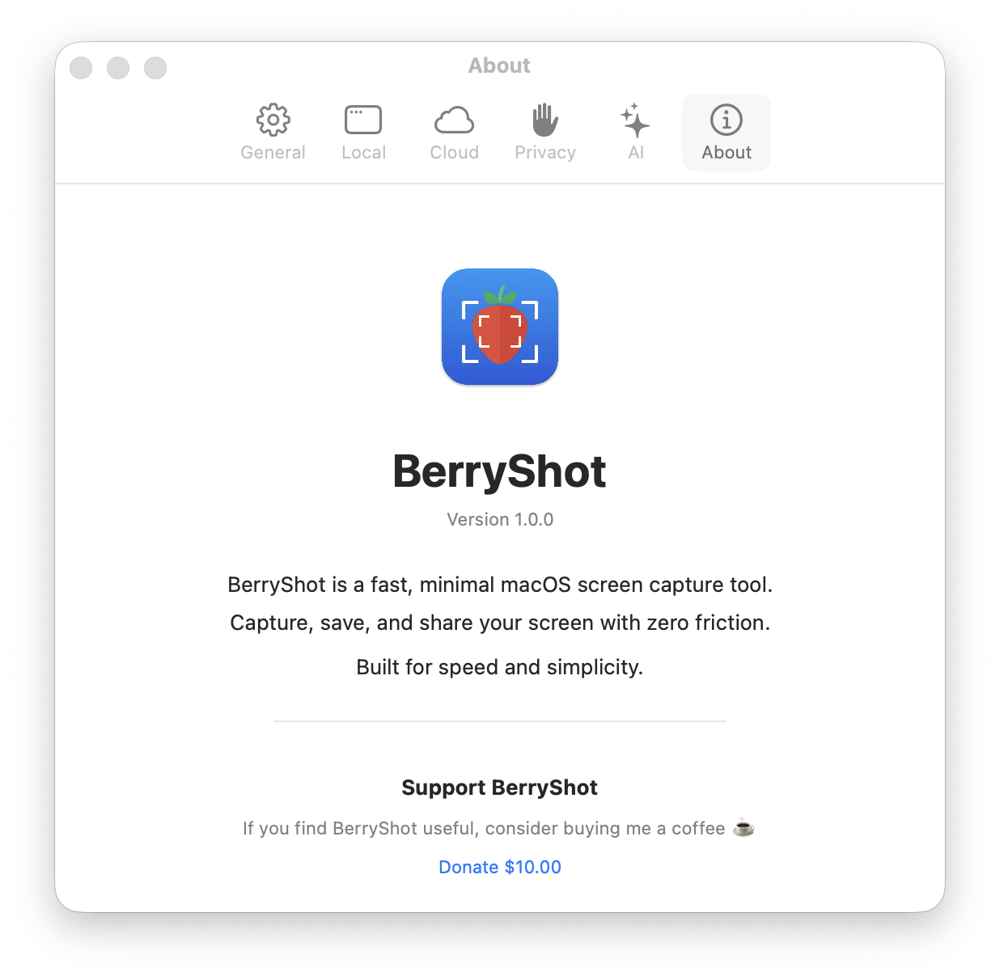
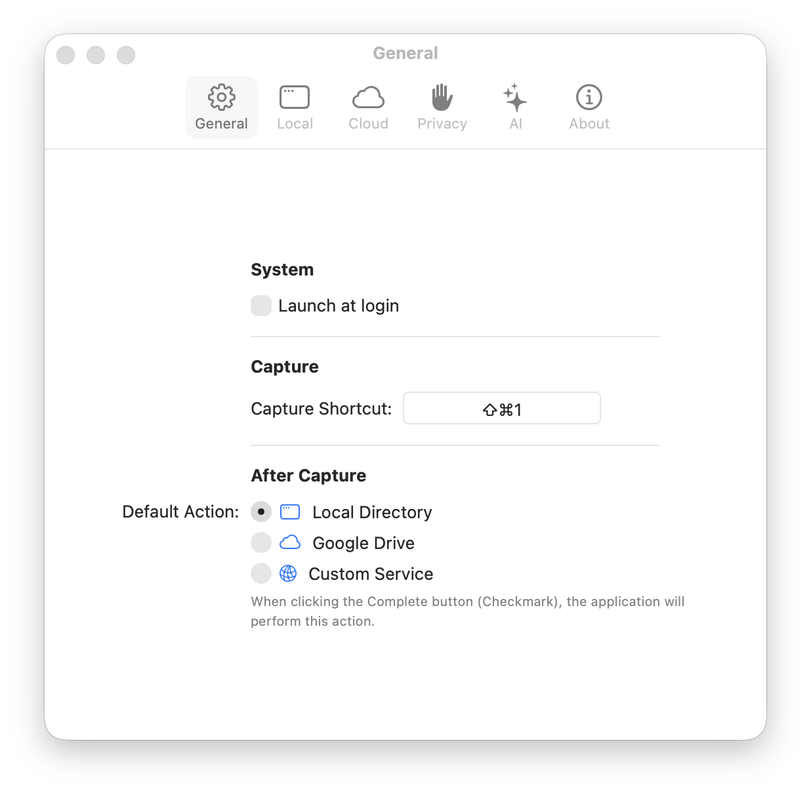
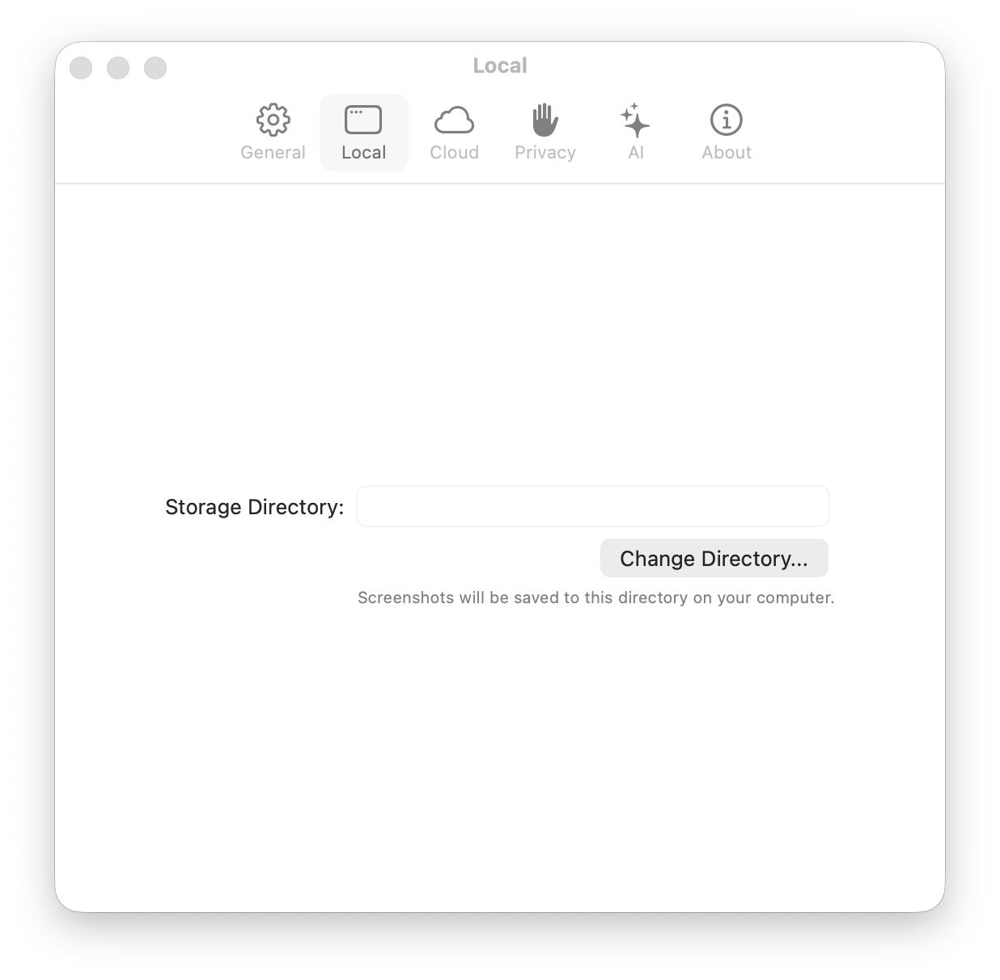
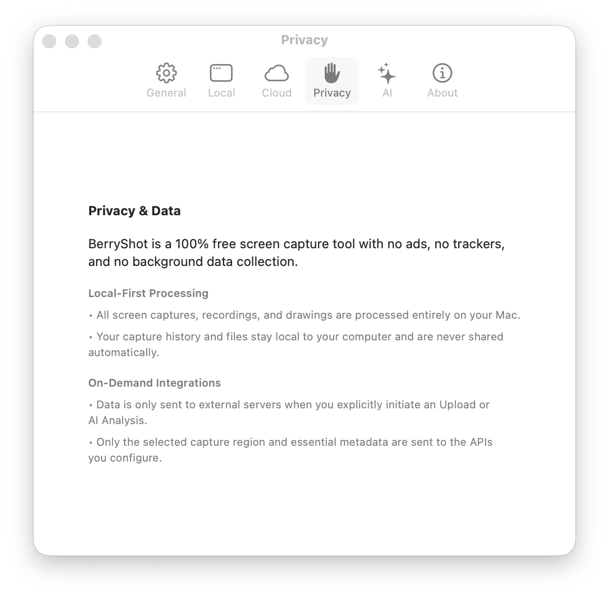
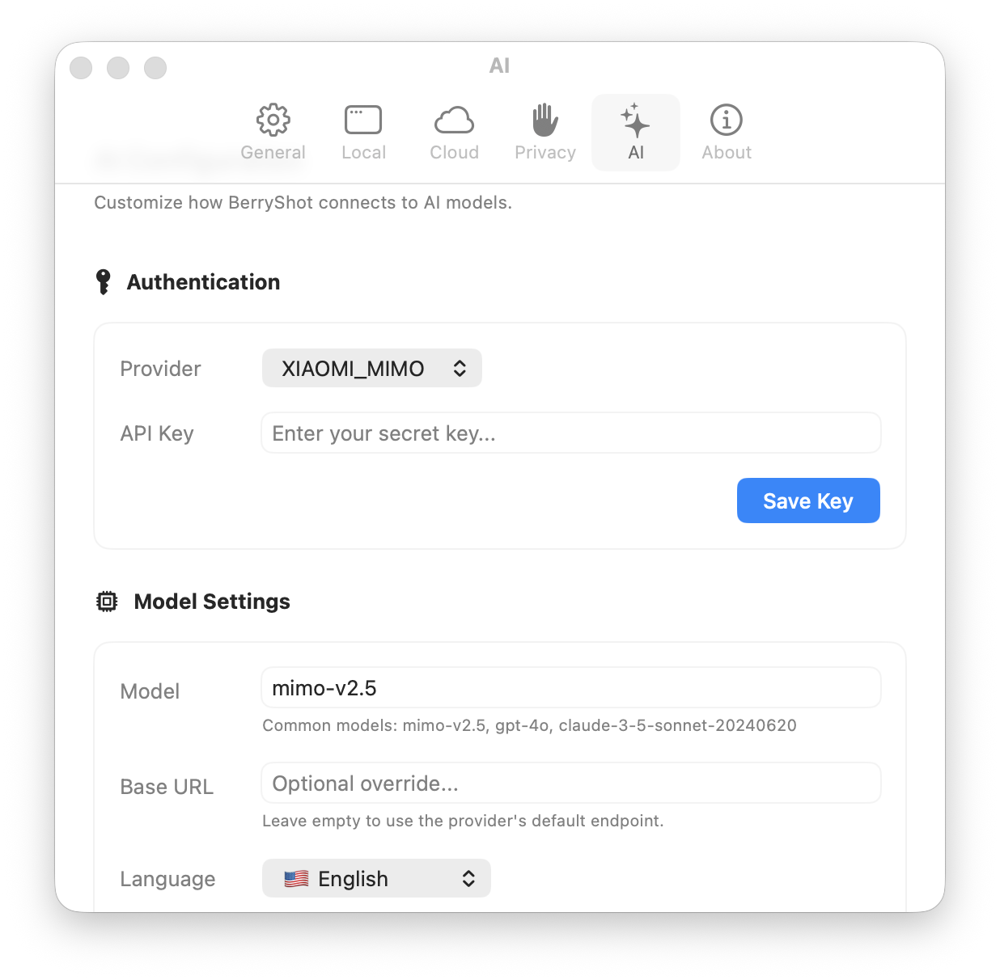
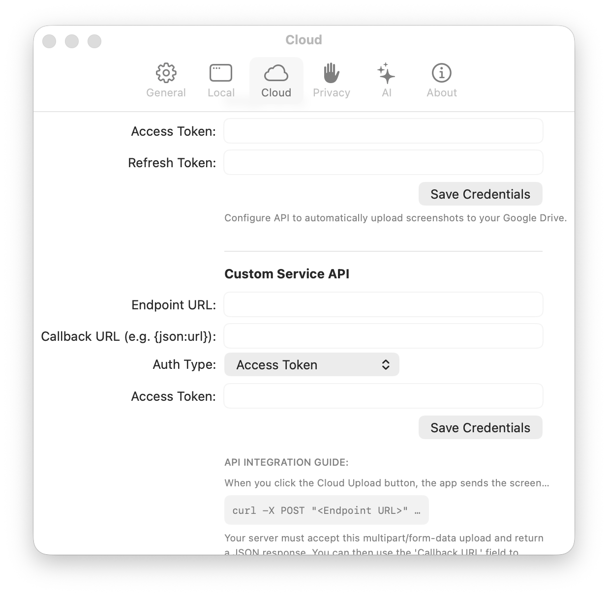

BerryShot Documentation
Welcome to the official user guide for BerryShot. BerryShot is a fast, lightweight, privacy-first utility that resides silently in your macOS Menu Bar, providing advanced capture tools, native local OCR, and instant AI explanations.
1. Getting Started
BerryShot is designed exclusively for macOS Sonoma (14.0) or later. The app leverages Apple's native APIs (SwiftUI, Apple Vision OCR, and Sandbox Security) to achieve maximum performance and minimum battery impact.
Core Capabilities
- Blazing Fast Captures: Trigger crosshair cropping instantly using customizable hotkeys.
- Local OCR: Extract text from images without uploading to the cloud, utilizing Apple's machine learning.
- AI Assistants: Query Claude or ChatGPT to explain code snippets, translate languages, or rewrite content on the fly.
- Cloud Storage: Configure Amazon S3 or Imgur endpoints for shareable cloud links.

2. Installation Guide
To maintain standard integrity and prevent zip extraction friction, BerryShot is packaged inside a
single mounted Disk Image (.dmg) file.
Download DMG
Click the Download link on the homepage or
header to download BerryShot.dmg.
Mount & Drag
Double-click the downloaded file and drag the
notex.work icon to your Applications folder.
Grant Permissions
Open BerryShot from Applications, and allow Screen Recording permissions in System Settings.
Unverified Developer Warning (Gatekeeper Bypass)
Because BerryShot is a free, self-built, open-source
utility and is not signed using a paid Apple Developer Program Certificate ($99/year), macOS
Gatekeeper will prevent launch on download showing a warning: Apple could not verify BerryShot is free of malware...
To open and run the app safely, choose one of these two options:
- Open your Applications folder in Finder.
- Right-click (or Control + click)
notex.work. - Select Open from the context menu.
- Click Open in the prompt. This permanently white-lists the app.
Remove the quarantine attribute flag assigned by your browser by running this in Terminal:
xattr -cr /Applications/notex.work
3. General Settings
General configurations allow you to customize how the application interacts with your system, notifications, and menus.
Launch at Login: Automatically starts BerryShot in the background when your Mac turns on.
Play Sound Effects: Triggers camera shutters and success alerts upon screenshot saving.
Show Notifications: Displays transient banners showing cropped preview and action statuses.

4. Annotations & Drawing
Once a screenshot area is selected, the custom drawing toolbar slides out. You can annotate directly onto the frame before saving or sharing.
Annotation Tools
- Pencil Tool: Free-hand sketch outlines or doodles.
- Shape Blocks: Draw pixel-perfect circles, ovals, and rectangles.
- Direction Arrows: Point to UI elements to highlight details.
- Custom Text: Type explanatory labels onto the picture.
Visual Properties
- Stroke width: Tweak annotation lines from fine thin to bold thick.
- Palette presets: Choose high-contrast colors (Strawberry Red, Neon Green, Royal Blue, Mustard Yellow).
- Undo / Redo: Instantly revert any strokes with standard macOS command.
5. Local Offline OCR
BerryShot stands out by executing optical character recognition (OCR) completely on your local device. Utilizing Apple's core Vision Framework, the app extracts text content in less than 100 milliseconds without internet latency or privacy leaks.


6. ChatGPT / Claude AI Explainer
Enhance your workflow by pairing extracted OCR text directly with Anthropic Claude or OpenAI ChatGPT models. When enabled, BerryShot sends the text along with prompt configurations to provide instant responses.
How to Set Up
- Open Preferences / Settings and switch to the AI Tab.
- Toggle "Enable AI Integration".
- Choose your Provider: Anthropic Claude or OpenAI ChatGPT.
- Enter your API key safely. The API key is stored securely in your macOS Keychain.
- Customize the default System Prompt (e.g. "Explain this code snippet", "Translate this text to Vietnamese", "Summarize this paragraph").

7. Cloud Upload Configuration
Easily share screenshots with colleagues by setting up cloud upload endpoints. You can choose to use Imgur for fast image hosting, or standard Amazon Web Services (AWS) S3 buckets for private infrastructure.
AWS S3 Configuration parameters:
• S3 Bucket Name: "my-screenshots-bucket"
• IAM Access Key: "AKIA..." (Stored encrypted)
• Region Code: e.g. "us-east-1"

8. Privacy & Permissions
Because BerryShot is a utility that captures your screen, macOS enforces strict security access checks. You must explicitly authorize Screen Recording capabilities before the app can read your screen contents.
9. Support & Contact
If you run into issues, have feature proposals, or require business assistance, please email our support address.
Contact Developer Team
We respond to email inquiries within 24-48 business hours.